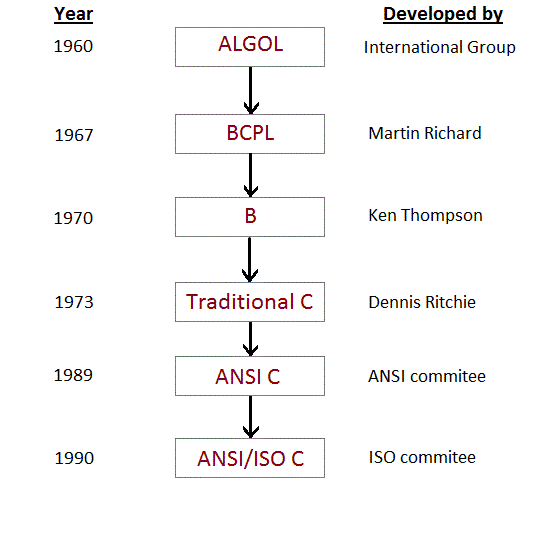

C could be a structured programing language developed by Dennis Ritchie in 1973 at Bell Laboratories. it's one in every of the foremost fashionable pc languages nowadays as a result of its structure, high-level abstraction, machine freelance feature etc. C language was developed to write down the operating system software package, therefore it's powerfully related tooperating system, that is one in every of the foremost fashionable network software package in use nowadays and heart ofnet information superhighway
C language has evolved from three different structured language ALGOL, BCPL and B Language. It uses many concepts from these languages while introduced many new concepts such as datatypes, struct, pointer etc. In 1988, the language was formalised by American National Standard Institute(ANSI). In 1990, a version of C language was approved by the International Standard Organisation(ISO) and that version of C is also referred to as C89.
Programming Languages broadly speaking categorised into four classes
A machine language consists of the numeric codes for the operations that a selected pc will execute directly. The codes arstrings of 0s and 1s, or binary digits (“bits”), that ar oft regenerate each from and to positional representation system (base 16) for human viewing and modification. Machine language directions usually use some bits to represent operations, likeaddition, and a few to represent operands, or maybe the placement of successive instruction. Machine language istroublesome to browse and write, since it doesn't match standard notational system or human language, and its codes vary from pc to pc.
Assembly language is one level higher than machine language. It uses short mnemotechnic codes for directions and permitsthe software engineer to introduce names for blocks of memory that hold knowledge. One would possibly therefore write “add pay, total” rather than “0110101100101000” for Associate in Nursing instruction that adds 2 numbers. programing language is intended to be simply translated into machine language
Sometimes abbreviated as HLL, a application-oriented language may be a computer programing language that won'trestricted by the pc, designed for a particular job, and is simpler to know. it's additional like human language and fewer like machine language. However, for a pc to know and run a program created with a application-oriented language, it should be compiled into machine language. the primary high-level languages were introduced within the 1950's. Today, high-level languages ar in widespread use. These embrace BASIC, C, C++, Cobol, FORTRAN, Java, Pascal, Perl, PHP, Python, Ruby, and Visual Basic.
Low-level languages ar designed to control and handle the whole hardware and directions set design of a pc directly. Low-level languages ar thought of to be nearer to computers. In alternative words, their prime operate is to control, manage and manipulate the computing hardware and parts. Programs and applications written in an exceedingly low-level language ardirectly possible on the computing hardware with none interpretation or translation.
A program that interprets Associate in Nursing programing language program into a machine language program is termedAssociate in Nursing programme.
It is a program that interprets a high level language program into a machine language program. A compiler is additionalintelligent than Associate in Nursing programme. It checks all types of limits, ranges, errors etc. however its program run time is additional and occupies a bigger a part of the memory. it's slow speed. as a result of a compiler goes through the wholeprogram then interprets the whole program into machine codes.
An interpreter may be a program that interprets statements of a program into code. It interprets only 1 statement of the program at a time. It reads only 1 statement of program, interprets it and executes it. Then it reads successive statement of the program once more interprets it and executes it. during this method it issue additional until all the statements ar translated and dead.
A variable in C language must be given a type, which defines what type of data the variable will hold. It can be:
| • char: | : Can hold/store a character in it. |
| int | Used to hold an integer |
| Float | Used to hold a float value. |
| double | Used to hold a double value. |